This animation deals with themes of loss and grief
and aims to reframe death as a continuation of life
and the becoming a part of something bigger.
To honor someones life we should honor their death
and by that honor the ground they came from.
I definitely wanted to take a positive approach but
also promote the idea of natural burials.
I like to believe that passed ones never really leave,
and that is in technicality true because they're in the
ground.
But in cases of green burials one can be buried
in shroud or raw wood and be taken by living ecosystem
around them.
This is possible in over 25 cemetries in Netherlands
alone.
Dying alone doesn’t mean going to waste, we should use these
tragic moments to produce something good and give back to the
soil.
Nature teaches us something about community – how we can all
help each other. By working together for future goals we can
create a better future for everyone. I want to see if we could
try sustain this community aspect in life too, and reject the
idea of solitude in death.
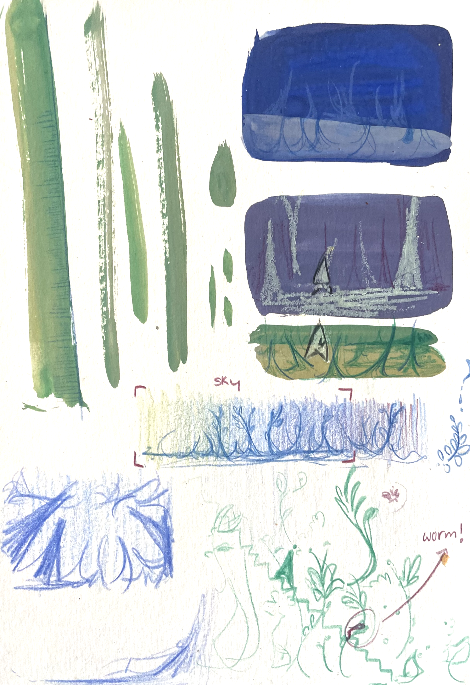
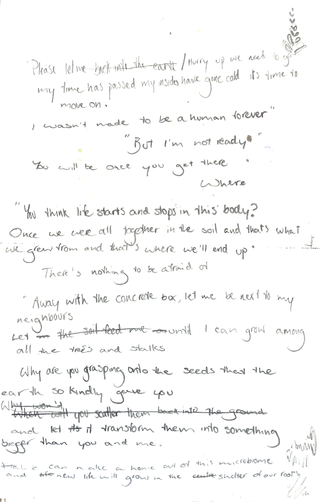
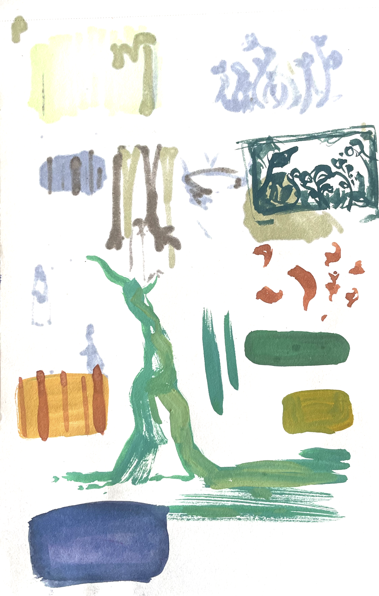
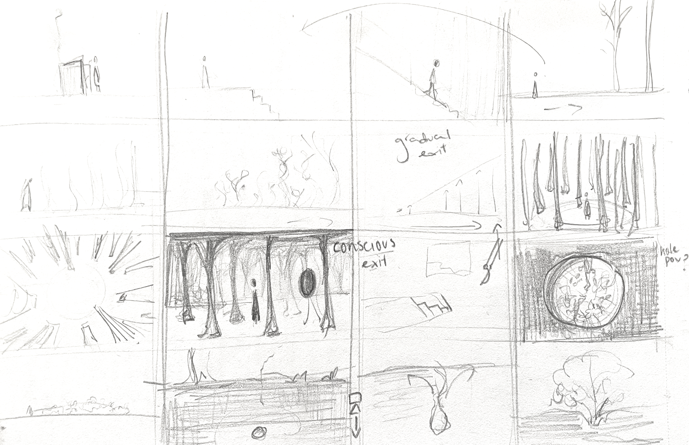
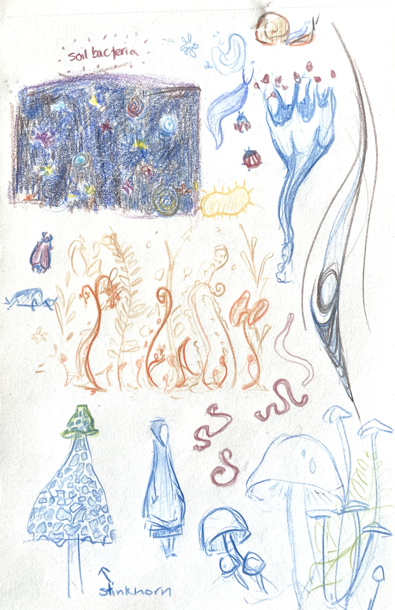
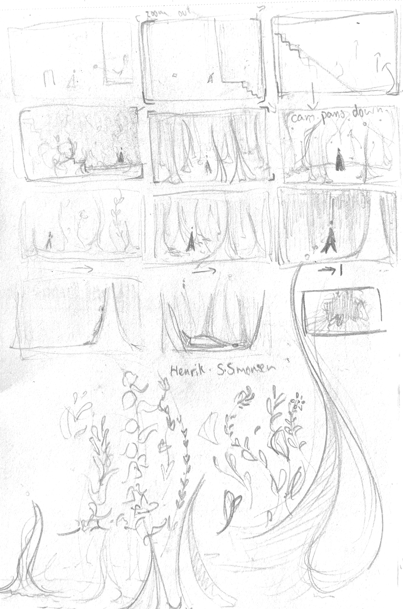
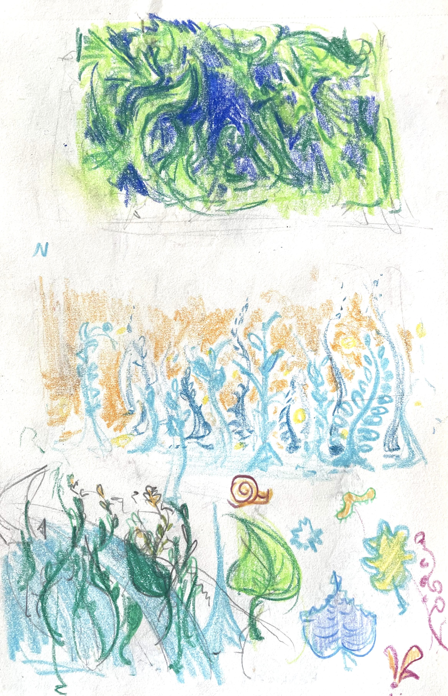
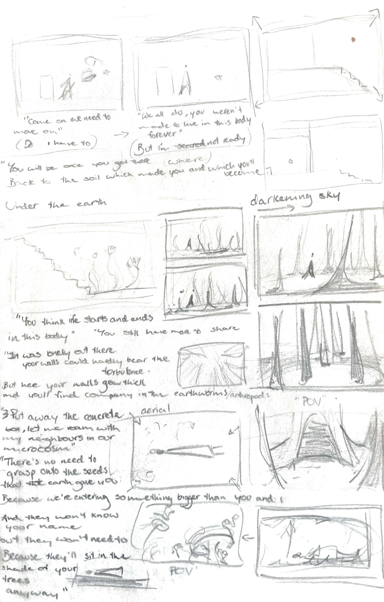
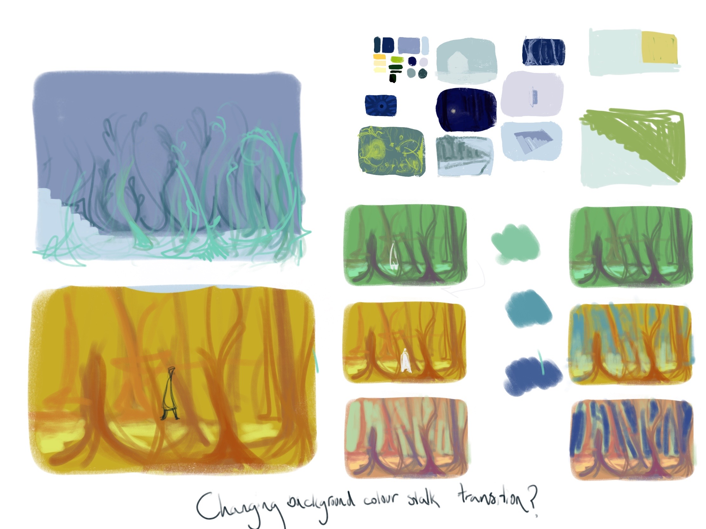
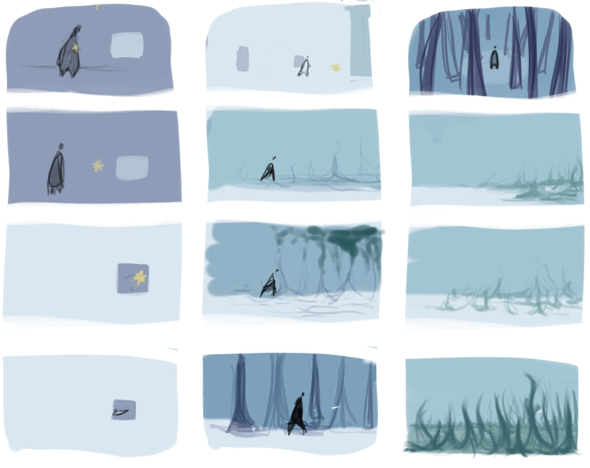
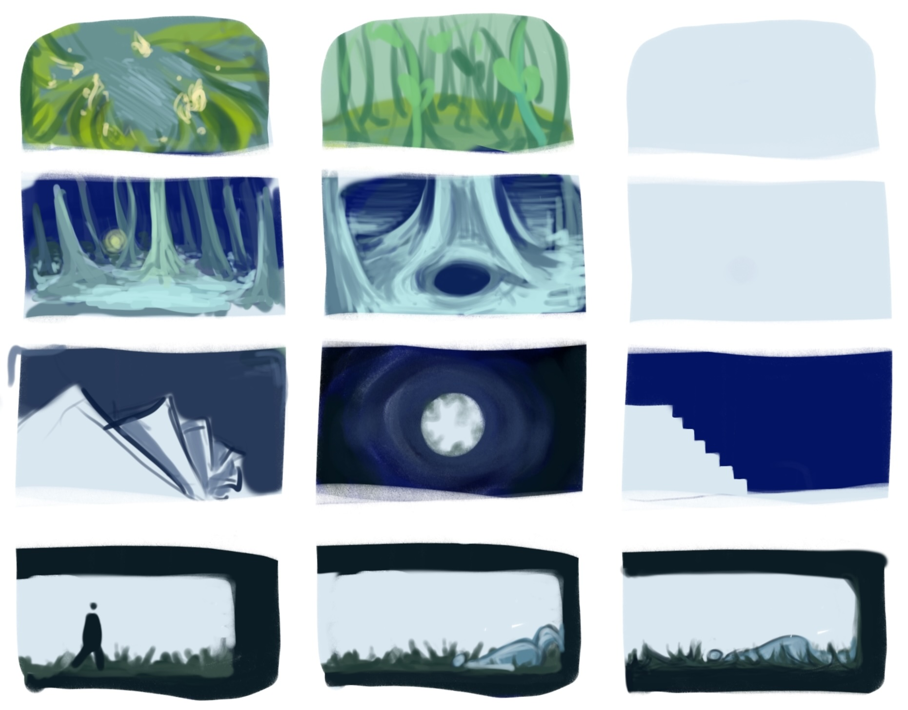
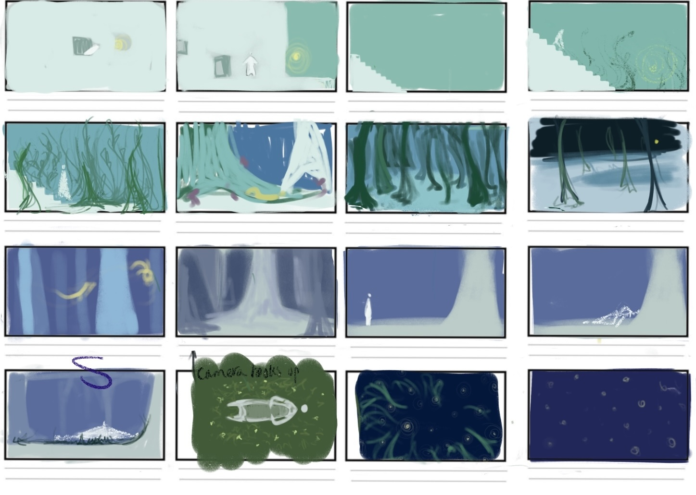
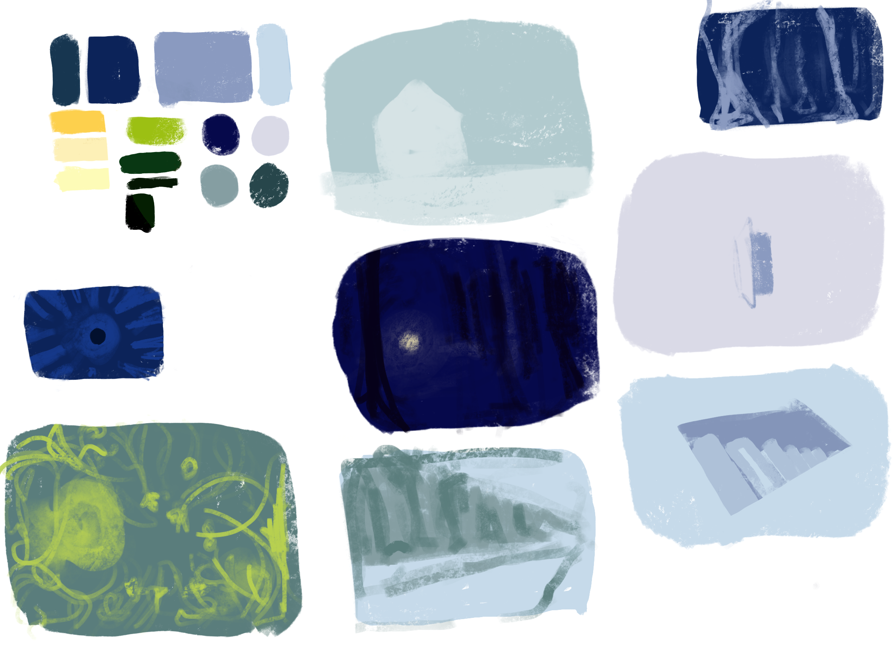